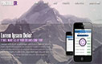

MyWorks
HTML+CSS
-
Верстка макета Asia Holidays Maldives
-
Верстка из PSD. Выпадающее меню на CSS. Выравнивание высоты колонок.
-
Верстка макета Cadastre
-
Верстка из PSD.
-
Верстка макета Zazor
-
Верстка из PSD. Пиксельная точность.
-
Верстка макета Pingbuller
- 
-
Верстка из PSD. Использование подхода Responsive дизайн. Пиксельная точность. Использование спрайтов. Методология BEM. Кроссбраузерность. Поддержка IE8+, Firefox 5+, Opera 15+, Chrome latest.
HTML+CSS+JS
-
Верстка макета Build Home
-
Верстка из PSD. Использование SCSS, BEM. Подключение слайдера.
-
Верстка макета Urlaubsgluck
-
Верстка из PSD. Использование подхода Responsive дизайн. "Mobile first". Пиксельная точность. Методология BEM. SCSS. Кроссбраузерность. Поддержка IE8+. Подключение нестандартных шрифтов. Подключение плагинов. Загрузка картинок с помощью ajax-запроса. Поиск по запросу. Grunt.
-
Верстка макета OXXO
-
Верстка из PSD. Использование подхода Responsive дизайн. Bootstrap. SCSS. Кроссбраузерность. Поддержка IE8+. Подключение плагинов. Использование спрайтов. Gulp.